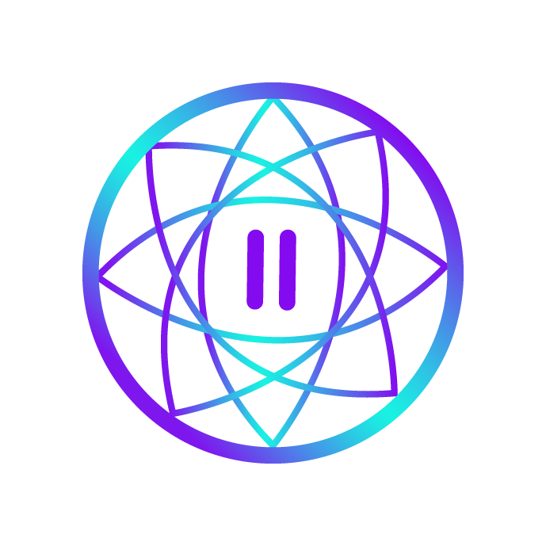
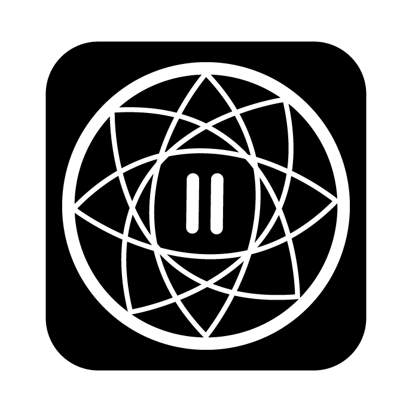
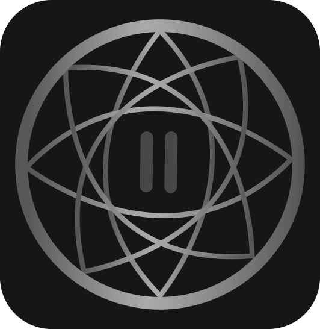
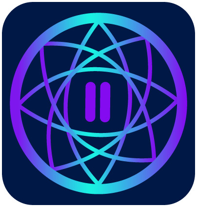

We wanted our logo to be approachable, and authentic. We decided to combine two signs:
1. Dream catcher symbol which represents good luck, positive energy, protection from bad dreams and bad energy.
2. Pause symbol which represents control, to make something stop for a period of time
By combining the two symbols we wanted our logo to give a peaceful and calm feeling with a sense of harmony. Our app is called “Pause” - the name indicated to stop any activity for a moment and take a break. We decided to connect the name of the app with the logo by having a pause symbol in the middle with a dream catcher surrounding it to give the idea of protection and calmness.
We used a combination of soft pink and soft blue color to highlight the two symbols with a dark background to bring out the color contrast between the elements.
Acceptable Logo variants include different logo styles and colour variations.
  Logo must have a minimum of 100px height and 95px width
